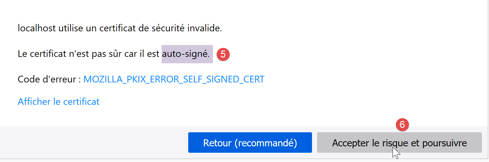
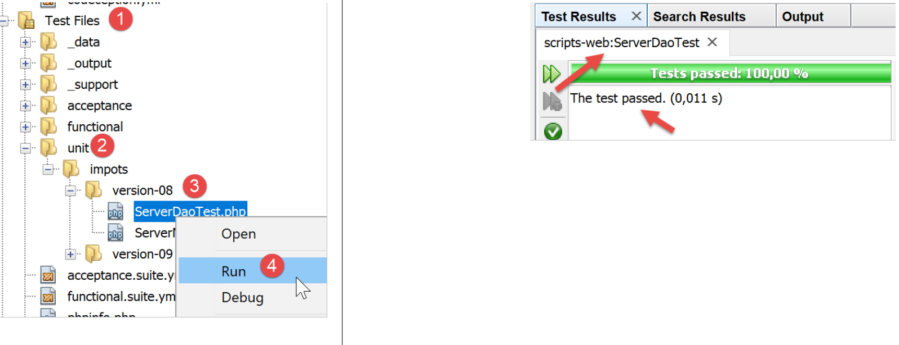
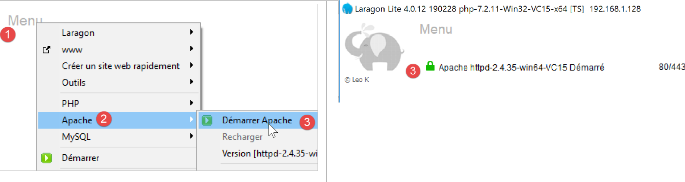

18. Exercice d’application – version 8
Nous allons reprendre l’application exemple – version 5 (paragraphe lien) et allons en faire une application client / serveur.
18.1. Introduction
L’architecture de la version 5 était la suivante :

-
la couche appelée [dao] (Data Access Objects) s'occupe des échanges avec la base de données MySQL et le système de fihiers local ;
-
la couche appelée [métier] fait le calcul de l'impôt ;
-
le script principal est le chef d’orchestre : il instancie les couches [dao] et [métier] puis dialogue avec la couche [métier] pour faire ce qu’il y a faire ;
Nous allons migrer cette architecture vers l’architecture client / serveur suivante :

-
en [2], nous reprendrons la couche [dao] de la version 5 en lui enlevant les méthodes d’accès au système de fichiers local. Ces méthodes migreront dans la couche [dao] du client [6, 7] ;
-
en [3], la couche [métier] restera celle de la version 5 sans ses méthodes [executeBatchImpôts, saveResults] qui migrent dans la couche [dao] [7] du client ;
-
en [4], le script serveur est à écrire : il aura à :
-
créer les couches [métier] et [dao] [3, 2] ;
-
dialoguer avec le script client [5, 7] ;
-
en [7], la couche [dao] du client est à écrire :
-
elle sera un client HTTP du script serveur [4, 5] ;
-
elle reprendra les méthodes d’accès au système de fichiers local de la couche [dao] de la version 5 ;
-
en [8], la couche [métier] du client respectera l’interface [InterfaceMetier] de la version 5. Son implémentation sera cependant différente. Dans la version 5, la couche [métier] faisait le calcul de l’impôt. Ici, c’est la couche [métier] du serveur qui fait ce calcul. La couche [métier] fera donc appel à la couche [dao] [7], pour dialoguer avec le serveur et lui demander de calculer l’impôt ;
-
en [9], le script console aura à instancier les couches [dao, métier] du client et à lancer l’exécution de celui-ci ;
18.2. Le serveur
Nous nous intéressons à la partie serveur de l’application.

Cette architecture sera implémentée par les scripts suivants :

18.2.1. Les entités échangées entre les couches

Les entités échangées entre les couches sont celles de la version 5 décrites au paragraphe lien.
18.2.2. La couche [dao]

La couche [dao] implémente l’interface [InterfaceServerDao] suivante :
| <?php
// espace de noms
namespace Application;
interface InterfaceServerDao {
// lecture des données de l'administration fiscale
public function getTaxAdminData(): TaxAdminData;
}
|
- ligne 9 : la méthode [getTaxAdminData] va chercher les données de l’administration fiscale dans une base de données ;
L’interface [InterfaceServerDao] est implémentée par la classe [ServerDao] suivante :
| <?php
// espace de noms
namespace Application;
// définition d'une classe ImpotsWithDataInDatabase
class ServerDao implements InterfaceServerDao {
// l'objet de type TaxAdminData qui contient les données des tranches d'impôts
private $taxAdminData;
// l'objet de type [Database] contennat les caractéristiques de la BD
private $database;
// constructeur
public function __construct(string $databaseFilename) {
// on mémorise la configuration JSON de la bd
$this->database = (new Database())->setFromJsonFile($databaseFilename);
// on prépare l'attribut
$this->taxAdminData = new TaxAdminData();
try {
// on ouvre la connexion à la base de données
$connexion = new \PDO($this->database->getDsn(), $this->database->getId(), $this->database->getPwd());
// on veut qu'à chaque erreur de SGBD, une exception soit lancée
$connexion->setAttribute(\PDO::ATTR_ERRMODE, \PDO::ERRMODE_EXCEPTION);
// on démarre une transaction
$connexion->beginTransaction();
// on remplit la table des tranches d'impôt
$this->getTranches($connexion);
// on remplit la table des constantes
$this->getConstantes($connexion);
// on termine la transaction sur un succès
$connexion->commit();
} catch (\PDOException $ex) {
// y-a-t-il une transaction en cours ?
if (isset($connexion) && $connexion->inTransaction()) {
// on termine la transaction sur un échec
$connexion->rollBack();
}
// on remonte l'exception au code appelant
throw new ExceptionImpots($ex->getMessage());
} finally {
// on ferme la connexion
$connexion = NULL;
}
}
// lecture des données de la base
private function getTranches($connexion): void {
…
}
// lecture de la table des constantes
private function getConstantes($connexion): void {
…
}
// retourne les données permettant le calcul de l'impôt
public function getTaxAdminData(): TaxAdminData {
return $this->taxAdminData;
}
}
|
Ce code a été présenté au paragraphe lien.
18.2.3. La couche [métier]
La couche [métier] implémente l’interface [InterfaceServerMetier] suivante :
| <?php
// espace de noms
namespace Application;
interface InterfaceServerMetier {
// calcul des impôts d'un contribuable
public function calculerImpot(string $marié, int $enfants, int $salaire): array;
}
|
L’interface [InterfaceServerMetier] est implémentée par la classe [ServerMetier] suivante :
| <?php
// espace de noms
namespace Application;
class ServerMetier implements InterfaceServerMetier {
// couche Dao
private $dao;
// données administration fiscale
private $taxAdminData;
//---------------------------------------------
// setter couche [dao]
public function setDao(InterfaceServerDao $dao) {
$this->dao = $dao;
return $this;
}
public function __construct(InterfaceServerDao $dao) {
// on mémorise une référence sur la couche [dao]
$this->dao = $dao;
// on récupère les données permettant le calcul de l'impôt
// la méthode [getTaxAdminData] peut lancer une exception ExceptionImpots
// on la laisse alors remonter au code appelant
$this->taxAdminData = $this->dao->getTaxAdminData();
}
// calcul de l'impôt
// --------------------------------------------------------------------------
public function calculerImpot(string $marié, int $enfants, int $salaire): array {
…
// résultat
return ["impôt" => floor($impot), "surcôte" => $surcôte, "décôte" => $décôte, "réduction" => $réduction, "taux" => $taux];
}
// --------------------------------------------------------------------------
private function calculerImpot2(string $marié, int $enfants, float $salaire): array {
…
// résultat
return ["impôt" => $impôt, "surcôte" => $surcôte, "taux" => $coeffR[$i]];
}
// revenuImposable=salaireAnnuel-abattement
// l'abattement a un min et un max
private function getRevenuImposable(float $salaire): float {
…
// résultat
return floor($revenuImposable);
}
// calcule une décôte éventuelle
private function getDecôte(string $marié, float $salaire, float $impots): float {
…
// résultat
return ceil($décôte);
}
// calcule une réduction éventuelle
private function getRéduction(string $marié, float $salaire, int $enfants, float $impots): float {
..
// résultat
return ceil($réduction);
}
}
|
Ce code a déjà été vu et commenté dès la version 1 au paragraphe lien. Sa version objet avec une base de données a été présentée au paragraphe lien.
18.2.4. Le script serveur

Le script serveur implémente la couche [web] [4]. Le script [impots-server] est configuré par le fichier jSON [config-server.json] suivant :
| {
"rootDirectory": "C:/myprograms/laragon-lite/www/php7/scripts-web/impots/version-08",
"databaseFilename": "Data/database.json",
"taxAdminDataFileName": "Data/taxadmindata.json",
"relativeDependencies": [
"/Entities/BaseEntity.php",
"/Entities/ExceptionImpots.php",
"/Entities/TaxAdminData.php",
"/Entities/Database.php",
"/Dao/InterfaceServerDao.php",
"/Dao/ServerDao.php",
"/Métier/InterfaceServerMetier.php",
"/Métier/ServerMetier.php"
],
"absoluteDependencies": ["C:/myprograms/laragon-lite/www/vendor/autoload.php"],
"users": [
{
"login": "admin",
"passwd": "admin"
}
]
}
|
-
ligne 1 : le dossier racine à partir duquel les chemins de fichiers seront mesurés ;
-
ligne 2 : le fichier jSON de configuration de la base de données MySQL ;
-
ligne 3 : le fichier jSON des données de l’administration fiscale ;
-
lignes 5-14 : les fichiers de l’application ;
-
ligne 15 : la dépendance nécessaire aux bibliothèques tierces, ici Symfony ;
-
lignes 16-20 : le tableau des utilisateurs autorisés à utiliser l’application ;
Les fichiers jSON [database.json, taxadmindata.json] sont ceux de la version 5 décrit au paragraphe lien.
Le script [impots-server] implémente la couche [web] de la façon suivante :
| <?php
// respect strict des types déclarés des paramètres de foctions
declare (strict_types=1);
// espace de noms
namespace Application;
// gestion des erreurs par PHP
//ini_set("display_errors", "0");
//
// chemin du fichier de configuration
define("CONFIG_FILENAME", "Data/config-server.json");
// on récupère la configuration
$config = \json_decode(file_get_contents(CONFIG_FILENAME), true);
// on inclut les dépendances nécessaires au script
$rootDirectory = $config["rootDirectory"];
foreach ($config["relativeDependencies"] as $dependency) {
require "$rootDirectory$dependency";
}
// dépendances absolues (bibliothèques tierces)
foreach ($config["absoluteDependencies"] as $dependency) {
require "$dependency";
}
// définition des constantes
define("DATABASE_CONFIG_FILENAME", $config["databaseFilename"]);
//
// dépendances Symfony
use \Symfony\Component\HttpFoundation\Response;
use \Symfony\Component\HttpFoundation\Request;
// préparation de la réponse JSON du serveur
$response = new Response();
$response->headers->set("content-type", "application/json");
$response->setCharset("utf-8");
// on récupère la requête courante
$request = Request::createFromGlobals();
// authentification
$requestUser = $request->headers->get('php-auth-user');
$requestPassword = $request->headers->get('php-auth-pw');
// l'utilisateur existe-t-il ?
$users = $config["users"];
$i = 0;
$trouvé = FALSE;
while (!$trouvé && $i < count($users)) {
$trouvé = ($requestUser === $users[$i]["login"] && $users[$i]["passwd"] === $requestPassword);
$i++;
}
// on fixe le code de statut de la réponse
if (!$trouvé) {
// pas trouvé - code 401
$response->setStatusCode(Response::HTTP_UNAUTHORIZED);
$response->headers->add(["WWW-Authenticate" => "Basic realm=" . utf8_decode("\"Serveur de calcul d'impôts\"")]);
// msg d'erreur
$response->setContent(\json_encode(["réponse" => ["erreur" => "Echec de l'authentification [$requestUser, $requestPassword]"]], JSON_UNESCAPED_UNICODE));
$response->send();
// fin
exit;
}
// on a un utilisateur valide - on vérifie les paramètres reçus
$erreurs = [];
// on doit avoir trois paramètres GET
$method = strtolower($request->getMethod());
$erreur = $method !== "get" || $request->query->count() != 3;
// erreur ?
if ($erreur) {
$erreurs[] = "Méthode GET requise avec les seuls paramètres [marié, enfants, salaire]";
}
// on récupère le statut marital
if (!$request->query->has("marié")) {
$erreurs[] = "paramètre marié manquant";
} else {
$marié = trim(strtolower($request->query->get("marié")));
$erreur = $marié !== "oui" && $marié !== "non";
// erreur ?
if ($erreur) {
$erreurs[] = "paramètre marié [$marié] invalide";
}
}
// on récupère le nombre d'enfants
if (!$request->query->has("enfants")) {
$erreurs[] = "paramètre enfants manquant";
} else {
$enfants = trim($request->query->get("enfants"));
// le nombre d'enfants doit être un nombre entier >=0
$erreur = !preg_match("/^\d+$/", $enfants);
// erreur ?
if ($erreur) {
$erreurs[] = "paramètre enfants [$enfants] invalide";
}
}
// on récupère le salaire annuel
if (!$request->query->has("salaire")) {
$erreurs[] = "paramètre salaire manquant";
} else {
// le salaire doit être un nombre entier >=0
$salaire = trim($request->query->get("salaire"));
$erreur = !preg_match("/^\d+$/", $salaire);
// erreur ?
if ($erreur) {
$erreurs[] = "paramètre salaire [$salaire] invalide";
}
}
// autres paramètres dans la requête ?
foreach (\array_keys($request->query->all()) as $key) {
// paramètre valide ?
if (!\in_array($key, ["marié", "enfants", "salaire"])) {
$erreurs[] = "paramètre [$key] invalide";}
}
// erreurs ?
if ($erreurs) {
// on envoie un code d'erreur 400 au client
$response->setStatusCode(Response::HTTP_BAD_REQUEST);
$response->setContent(json_encode(["réponse" => ["erreurs" => $erreurs]], JSON_UNESCAPED_UNICODE));
$response->send();
exit;
}
// on a tout ce qu'il faut pour travailler
// création de l'architecture du serveur
$msgErreur = "";
try {
// création de la couche [dao]
$dao = new ServerDao($config["databaseFilename"]);
// création de la couche [métier]
$métier = new ServerMetier($dao);
} catch (ExceptionImpots $ex) {
// on note l'erreur
$msgErreur = utf8_encode($ex->getMessage());
}
// erreur ?
if ($msgErreur) {
// on envoie un code d'erreur 500 au client
$response->setStatusCode(Response::HTTP_INTERNAL_SERVER_ERROR);
$response->setContent(\json_encode(["réponse" => ["erreur" => $msgErreur]], JSON_UNESCAPED_UNICODE));
$response->send();
exit;
}
// calcul de l'impôt
$result = $métier->calculerImpot($marié, (int) $enfants, (int) $salaire);
// on rend la réponse
$response->setContent(json_encode(["réponse" => $result], JSON_UNESCAPED_UNICODE));
$response->send();
|
Commentaires
-
ligne 16 : on exploite le fichier de configuration ;
-
lignes 18-26 : on charge toutes les dépendances ;
-
ligne 29 : le nom du fichier [database.json] ;
-
lignes 32-33 : on déclare les classes des bibliothèques tierces qu’on va utiliser ;
-
lignes 36-38 : on prépare une réponse jSON ;
-
lignes 40-52 : on vérifie que l’utilisateur qui fait la requête fait bien partie des utilisateurs autorisés ;
-
lignes 54-63 : si ce n’est pas le cas, on envoie le code HTTP 401 qui indique un refus d’accès. A réception de ce code et de l’entête HTTP [WWW-Authenticate => Basic realm=], la plupart des navigateurs affichent une fenêtre d’authentification invitant l’utilisateur à s’authentifier ;
-
ligne 59 : la réponse jSON du serveur explique la cause de l’erreur. Toutes les réponses du serveur seront la chaîne jSON d’un tableau [‘réponse’=>’qq chose’] ;
-
lignes 64-117 : on vérifie la validité de la requête :
-
une requête GET avec trois paramètres exactement ;
-
un paramètre [marié] dont la valeur doit être ‘oui’ ou ‘non’ ;
-
un paramètre [enfants] dont la valeur doit être un entier >=0 ;
-
un paramètre [salaire] dont la valeur doit être un entier >=0 ;
-
ligne 65 : à chaque fois qu’une erreur est détectée, un message d’erreur est ajouté au tableau [$erreurs] ;
-
lignes 120-126 : si erreur il y a, alors on envoie le code HTTP [400 Bad Request] au client (ligne 122) ;
-
ligne 123 : la réponse jSON du serveur explique la cause de l’erreur ;
-
à partir de la ligne 132, tout a été vérifié. On peut instancier les couches [dao, métier]. Cette instanciation a un coût et il ne faut la faire que si on est sûr d’avoir une requête valide ;
-
lignes 130-138 : on crée l’architecture du serveur. La construction de la couche [dao] peut lancer une exception de type [ExceptionImpots]. Si cette exception se produit, on note l’erreur ;
-
lignes 135-138 : si exception il y a eu, alors on envoie le code HTTP 500 au client. Ce code signifie que le serveur a bogué ;
-
ligne 143 : la réponse explique la cause de l’erreur ;
-
ligne 148 : le calcul de l’impôt est délégué à la couche [métier] ;
-
lignes 150-151 : envoi de la réponse ;
Testons ce script avec un navigateur. Demandons l’URL sécurisée [https://localhost:443/php7/scripts-web/impots/version-08/impots-server.php?marié=oui&enfants=5&salaire=100000]:
-
en [1], l’URL sécurisée demandée ;
-
en [2], les trois paramètres [marié, enfants, salaire] ;
-
en [3], le serveur Apache de Laragon a envoyé un certificat SSL autosigné. Le navigateur l’a remarqué et affiche un avertissement de sécurité : il considère que le site du serveur n’est pas digne de confiance ;
-
en [4], on continue ;


-
en [7], le navigateur affiche une fenêtre pour que l’utilisateur puisse s’authentifier ;
-
en [9,10], on tape [admin] et [admin] ;

- en [13], la réponse jSON du serveur ;
Faisons quelques tests d’erreur :
On demande l’URL [https://localhost/php7/scripts-web/impots/version-08/impots-server.php?marié=x&enfants=x&salaire=x&w=x]
On obtient le résultat suivant :

On coupe le SGBD MySQL et on demande l’URL [https://localhost/php7/scripts-web/impots/version-08/impots-server.php?marié=oui&enfants=3&salaire=60000] :

18.2.5. Tests [Codeception]
A chaque fois que nous construirons une nouvelle version du serveur, nous testerons les couches [métier] et [dao] comme il a été fait depuis la version 04 (cf paragraphes lien et lien).
Tout d’abord, nous associons le projet [scripts-web] aux tests [Codeception]. Pour cela, suivez la même procédure suivie pour le projet [scripts-console] au paragraphe lien. Nous obtenons un projet [scripts-web] avec un dossier [Test Files] :

Nous allons créer un test pour la couche [dao] et un pour la couche [métier].
18.2.5.1. Tests de la couche [dao]

Le test [ServerDaoTest] sera le suivant :
| <?php
// respect strict des types déclarés des paramètres de foctions
declare (strict_types=1);
// espace de noms
namespace Application;
// définition des constantes
define("ROOT", "C:/myprograms/laragon-lite/www/php7/scripts-web/impots/version-08");
// chemin du fichier de configuration
define("CONFIG_FILENAME", ROOT . "/Data/config-server.json");
// on récupère la configuration
$config = \json_decode(\file_get_contents(CONFIG_FILENAME), true);
// on inclut les dépendances nécessaires au script
$rootDirectory = $config["rootDirectory"];
foreach ($config["relativeDependencies"] as $dependency) {
require "$rootDirectory$dependency";
}
// dépendances absolues (bibliothèques tierces)
foreach ($config["absoluteDependencies"] as $dependency) {
require "$dependency";
}
// test -----------------------------------------------------
class ServerDaoTest extends \Codeception\Test\Unit {
// TaxAdminData
private $taxAdminData;
public function __construct() {
// parent
parent::__construct();
// on récupère la configuration
$config = \json_decode(\file_get_contents(CONFIG_FILENAME), true);
// création de la couche [dao]
$dao = new ServerDao(ROOT . "/" . $config["databaseFilename"]);
$this->taxAdminData = $dao->getTaxAdminData();
}
// tests
public function testTaxAdminData() {
…
}
}
|
Commentaires
-
lignes 9-24 : on construit le même environnement de travail que celui du serveur [impots-server.php]. Cela se fait en lignes 9-12 avec la définitions des deux constantes dont dépend l’environnement ;
-
lignes 32-40 : on construit une instance de la couche [dao] à tester comme il était fait dans le script serveur [impots-server.php] ;
-
à partir de maintenant on est dans les mêmes conditions que le script serveur [impots-server.php] : on peut démarrer les tests ;
-
lignes 43-45 : la méthode [testTaxAdminData] est celle décrite au paragraphe lien ;
Les résultats du test sont les suivants :

18.2.5.2. Tests de la couche [métier]

Le test [ServerMetierTest] sera le suivant :
| <?php
// respect strict des types déclarés des paramètres de foctions
declare (strict_types=1);
// espace de noms
namespace Application;
// définition des constantes
define("ROOT", "C:/myprograms/laragon-lite/www/php7/scripts-web/impots/version-08");
// chemin du fichier de configuration
define("CONFIG_FILENAME", ROOT . "/Data/config-server.json");
// on récupère la configuration
$config = \json_decode(\file_get_contents(CONFIG_FILENAME), true);
// on inclut les dépendances nécessaires au script
$rootDirectory = $config["rootDirectory"];
foreach ($config["relativeDependencies"] as $dependency) {
require "$rootDirectory$dependency";
}
// dépendances absolues (bibliothèques tierces)
foreach ($config["absoluteDependencies"] as $dependency) {
require "$dependency";
}
// classe de test
class ServerMetierTest extends \Codeception\Test\Unit {
// couche métier
private $métier;
public function __construct() {
parent::__construct();
// on récupère la configuration
$config = \json_decode(\file_get_contents(CONFIG_FILENAME), true);
// création de la couche [dao]
$dao = new ServerDao(ROOT . "/" . $config["databaseFilename"]);
// création de la couche [métier]
$this->métier = new ServerMetier($dao);
}
// tests
public function test1() {
…
}
public function test2() {
…
}
..
public function test11() {
…
}
}
|
Commentaires
-
lignes 9-24 : on construit le même environnement de travail que celui du serveur [impots-server.php]. Cela se fait en lignes 9-12 avec la définitions des deux constantes dont dépend l’environnement ;
-
lignes 30-38 : on construit une instance de la couche [métier] à tester comme il était fait dans le script serveur [impots-server.php] ;
-
à partir de maintenant on est dans les mêmes conditions que le script serveur [impots-server.php] : on peut démarrer les tests ;
-
lignes 40-53 : les méthodes [test1, test2…, test11] sont celles décrites au paragraphe lien ;
Les résultats du test sont les suivants :

18.3. Le client
Nous nous intéressons à la partie cliente de l’application.

Cette architecture sera implémentée par les scripts suivants :

18.3.1. Les entités échangées entre couches

Les entités ci-dessus ont toutes été décrites et déjà utilisées :
-
[BaseEntity] au paragraphe lien ;
-
[ExceptionImpots] au paragraphe lien ;
-
[TaxPayerData] au paragraphe lien ;
18.3.2. La couche [dao]

La couche [dao] implémente l’interface [InterfaceClientDao] suivante :
| <?php
// espace de noms
namespace Application;
interface InterfaceClientDao {
// lecture des données contribuables
public function getTaxPayersData(string $taxPayersFilename, string $errorsFilename): array;
// calcul des impôts d'un contribuable
public function calculerImpot(string $marié, int $enfants, int $salaire): array;
// enregistrement des résultats
public function saveResults(string $resultsFilename, array $taxPayersData): void;
}
|
-
ligne 9 : la fonction [getTaxPayersData] amène en mémoire les données des contribuables du fichier [$taxPayersFilename]. Si erreurs il y a, elles sont consignées dans le fichier [$errorsFilename] ;
-
ligne 12 : la fonction [calculerImpots] calcule l’impôt d’un contribuable ;
-
ligne 15 : la fonction [saveResults] sauvegarde dans le fichier [$resultsFilename] les données du tableau [$taxPayersData] qui représentent les résultats de plusieurs calculs d’impôt ;
L’interface [InterfaceClientDao] est implémentée par la classe [ClientDao] suivante :
| <?php
namespace Application;
// dépendances
use \Symfony\Component\HttpClient\HttpClient;
class ClientDao implements InterfaceClientDao {
// utilisation d'un Trait
use TraitDao;
// attributs
private $urlServer;
private $user;
// constructeur
public function __construct(string $urlServer, array $user) {
$this->urlServer = $urlServer;
$this->user = $user;
}
// calcul de l'impôt
public function calculerImpot(string $marié, int $enfants, int $salaire): array {
// on crée un client HTTP
$httpClient = HttpClient::create([
'auth_basic' => [$this->user["login"], $this->user["passwd"]],
"verify_peer" => false
]);
// on fait la requête au serveur
$response = $httpClient->request('GET', $this->urlServer,
["query" => [
"marié" => $marié,
"enfants" => $enfants,
"salaire" => $salaire
]]);
// on récupère la réponse
$json = $response->getContent(false);
$array = \json_decode($json, true);
$réponse = $array["réponse"];
// logs
// print "$json=json\n";
// on récupère le statut de la réponse
$statusCode = $response->getStatusCode();
// erreur ?
if ($statusCode !== 200) {
// on a une erreur - on lance une exception
$réponse = ["statut HTTP" => $statusCode] + $réponse;
$message = \json_encode($réponse, JSON_UNESCAPED_UNICODE);
throw new ExceptionImpots($message);
}
// on rend la réponse
return $réponse;
}
}
|
Commentaires
-
ligne 10 : on insère [TraitDao] (cf paragraphe lien) qui implémente les méthodes [getTaxPayersData] et [saveResults]. Ne reste donc que la méthode [calculerImpots] à implémenter. Celle-ci est implémentée aux lignes 22-49 ;
-
lignes 16-19 : le constructeur de la classe [ClientDao] reçoit deux paramètres :
-
l’URL [$urlServer] du serveur de calcul d’impôt ;
-
le tableau [$user] de clés ‘login’ et ‘passwd’ qui définit l’utilisateur qui fait la requête ;
-
ligne 22 : la méthode [calculerImpots] reçoit les trois paramètres à envoyer au serveur de calcul d’impôts ;
-
lignes 24-27 : on crée un client HTTP avec :
-
ligne 25 : les identifiants de l’utilisateur qui fait la requête ;
-
ligne 26 : l’option qui fait que le client HTTP ne vérifiera pas la validité du certificat SSL envoyé par le serveur ;
-
lignes 29-34 : le serveur est interrogé avec les trois paramètres qu’il attend ;
-
ligne 36 : on récupère la réponse jSON du serveur. Si on ne met pas le paramètre [false] à la méthode [Response::getContent], alors si le statut de la réponse du serveur est dans l’intervalle [3xx-5xx] (cas d’erreur), l’objet [Response] lance une exception dès qu’on cherche à obtenir le contenu de la réponse [Response::getContent] ou ses entêtes HTTP [Response::getHeaders]. Ici quelque soit le statut HTTP de la réponse, on veut pouvoir avoir accès au contenu de celle-ci, ne serait-ce que pour le loguer (ligne 40) ;
-
lignes 37-38 : la réponse du serveur est la chaîne jSON d’un tableau [‘réponse’=>qqChose]. On récupère le [qqChose] ;
-
ligne 40 : on logue la réponse jSON en mode développement ;
-
ligne 42 : on récupère le code de statut de la réponse ;
-
lignes 44-49 : si le code de statut HTTP n’est pas 200, alors c’est que notre serveur a rencontré un problème. On lance alors une exception de type [ExceptionImpots] avec pour message, la réponse jSON du serveur augmentée du code HTTP de la réponse ;
-
ligne 51 : on rend le résultat qui est un tableau associatif avec les clés [impôt, surcôte, décôte, réduction, taux] ;
18.3.3. La couche [métier]

La couche [métier] [8] implémente l’interface [InterfaceClientMetier] suivante :
| <?php
// espace de noms
namespace Application;
interface InterfaceClientMetier {
// calcul des impôts d'un contribuable
public function calculerImpot(string $marié, int $enfants, int $salaire): array;
// calcul des impôts en mode batch
public function executeBatchImpots(string $taxPayersFileName, string $resultsFileName, string $errorsFileName): void;
}
|
-
ligne 9 : la fonction [calculerImpots] calcule l’impôt ;
-
ligne 12 : la fonction [executeBatchImpots] calcule l’impôt des contribuables dont les données sont dans le fichier [$taxPayersFileName], met les résultats obtenus dans le fichier [$resultsFileName] et les erreurs rencontrées dans le fichier [$errorsFileName] ;
L’interface [InterfaceClientMetier] est implémentée par la classe [ClientMetier] suivante :
| <?php
// espace de noms
namespace Application;
class ClientMetier implements InterfaceClientMetier {
// attribut
private $clientDao;
// constructeur
public function __construct(InterfaceClientDao $clientDao) {
// on mémorise la référence sur la couche [dao]
$this->clientDao = $clientDao;
}
// calcul de l'impôt
public function calculerImpot(string $marié, int $enfants, int $salaire): array {
return $this->clientDao->calculerImpot($marié, $enfants, $salaire);
}
// calcul des impôts en mode batch
public function executeBatchImpots(string $taxPayersFileName, string $resultsFileName, string $errorsFileName): void {
// on laisse remonter les exceptions qui proviennent de la couche [dao]
// on récupère les données contribuables
$taxPayersData = $this->clientDao->getTaxPayersData($taxPayersFileName, $errorsFileName);
// tableau des résultats
$results = [];
// on les exploite
foreach ($taxPayersData as $taxPayerData) {
// on calcule l'impôt
$result = $this->calculerImpot(
$taxPayerData->getMarié(),
$taxPayerData->getEnfants(),
$taxPayerData->getSalaire());
// on complète [$taxPayerData]
$taxPayerData->setFromArrayOfAttributes($result);
// on met le résultat dans le tableau des résultats
$results [] = $taxPayerData;
}
// enregistrement des résultats
$this->clientDao->saveResults($resultsFileName, $results);
}
}
|
Commentaires
-
lignes 11-14 : le constructeur de la classe [ClientMetier] reçoit comme paramètre une référence sur la couche [dao] ;
-
lignes 17-19 : le calcul de l’impôt est délégué à la couche [dao] ;
-
lignes 20-38 : la fonction [executeBatchImpots] a été décrite au paragraphe lien ;
18.3.4. Le script principal

Le script client [MainImpotsClient.php] implémente la couche [console] [9]. Il est configuré par le fichier jSON [conf-client.json] suivant :
| {
"rootDirectory": "C:/Data/st-2019/dev/php7/poly/scripts-console/impots/version-08",
"taxPayersDataFileName": "Data/taxpayersdata.json",
"resultsFileName": "Data/results.json",
"errorsFileName": "Data/errors.json",
"dependencies": [
"Entities/BaseEntity.php",
"Entities/TaxPayerData.php",
"Entities/ExceptionImpots.php",
"Utilities/Utilitaires.php",
"Dao/InterfaceClientDao.php",
"Dao/TraitDao.php",
"Dao/ClientDao.php",
"Métier/InterfaceClientMetier.php",
"Métier/ClientMetier.php"
],
"absoluteDependencies": [
"C:/myprograms/laragon-lite/www/vendor/autoload.php"
],
"user": {
"login": "admin",
"passwd": "admin"
},
"urlServer": "https://localhost:443/php7/scripts-web/impots/version-08/impots-server.php"
}
|
-
ligne 1 : le dossier racine du client ;
-
ligne 2 : le fichier jSON des données contribuables ;
-
ligne 3 : le fichier jSON des résultats ;
-
ligen 4 : le fichier jSON des erreurs ;
-
lignes 6-19 : les différentes dépendances du projet client ;
-
lignes 20-23 : l’utilisateur faisant les requêtes au serveur de calcul d’impôts ;
-
ligne 24 : l’URL sécurisée du serveur de calcul d’impôts ;
Le code du script [MainImpotsClient.php] est le suivant :
| <?php
// respect strict des types déclarés des paramètres de foctions
declare (strict_types=1);
// espace de noms
namespace Application;
// gestion des erreurs par PHP
//ini_set("display_errors", "0");
//
// chemin du fichier de configuration
define("CONFIG_FILENAME", "../Data/config-client.json");
// on récupère la configuration
$config = \json_decode(file_get_contents(CONFIG_FILENAME), true);
// on inclut les dépendances nécessaires au script
$rootDirectory = $config["rootDirectory"];
foreach ($config["dependencies"] as $dependency) {
require "$rootDirectory/$dependency";
}
// dépendances absolues (bibliothèques tierces)
foreach ($config["absoluteDependencies"] as $dependency) {
require "$dependency";
}
// définition des constantes
define("TAXPAYERSDATA_FILENAME", "$rootDirectory/{$config["taxPayersDataFileName"]}");
define("RESULTS_FILENAME", "$rootDirectory/{$config["resultsFileName"]}");
define("ERRORS_FILENAME", "$rootDirectory/{$config["errorsFileName"]}");
//
// dépendances Symfony
use Symfony\Component\HttpClient\HttpClient;
// création de la couche [dao]
$clientDao = new ClientDao($config["urlServer"], $config["user"]);
// création de la couche [métier]
$clientMetier = new ClientMetier($clientDao);
// calcul de l'impôts en mode batch
try {
$clientMetier->executeBatchImpots(TAXPAYERSDATA_FILENAME, RESULTS_FILENAME, ERRORS_FILENAME);
} catch (\RuntimeException $ex) {
// on affiche l'erreur
print "L'erreur suivante s'est produite : " . $ex->getMessage() . "\n";
}
// fin
print "Terminé\n";
exit;
|
Commentaires
-
ligne 13 : chemin du fichier de configuration ;
-
ligne 16 : exploitation du fichier de configuration ;
-
lignes 18-26 : chargement des dépendances ;
-
ligne 37 : création de la couche [dao]. On passe au constructeur de la couche, les deux informations qu’il attend :
-
l’URL du serveur de calcul d’impôts ;
-
les identifiants de l’utilisateur qui va faire les requêtes ;
-
ligne 39 : création de la couche [métier]. On passe au constructeur de la couche, une référence sur la couche [dao] qui vient d’être créée ;
-
ligne 43 : on demande à la couche [métier] de :
-
calculer les impôts de tous les contribuables du fichier $config["taxPayerDataFileName"] ;
-
mettre les résultats dans le fichier $config["resultsFileName"] ;
-
mettre les erreurs dans le fichier $config["errorsFileName"] ;
-
la ligne 43 peut lancer des exceptions ;
-
ligne 46 : affichage du message d’erreur de l’exception ;
L’exécution du client amène les mêmes résultats que les versions précédentes. Vérifiez les fichiers suivants :
-
[Data/taxpayersdata.json] : données des contribuables pour lesquel on calcule le montant de l’impôt ;
-
[Data/results.json] : résultats pour les différents contribuables du fichier [Data/taxpayersdata.json] ;
-
[Data/errors.json] : les erreurs qui ont pu être rencontrées dans l’exploitation du fichier [Data/taxpayersdata.json] ;
Regardons les cas d’erreur possibles. Tout d’abord, arrêtons le serveur Laragon. Les résultats dans la console du client sont alors les suivants :
| Couldn't connect to server for"https://localhost/php7/scripts-web/impots/version-08/impots-server.php?mari%C3%A9=oui&enfants=2&salaire=55555".
Terminé
|
Maintenant lançons seulement le serveur Apache et pas le SGBD MySQL :

Les résultats dans la console du client sont alors les suivants :
| L'erreur suivante s'est produite : {"statut HTTP":500,"erreur":"SQLSTATE[HY000] [2002] Aucune connexion n’a pu être établie car l’ordinateur cible l’a expressément refusée.\r\n"}
Terminé
|
Maintenant, lançons MySQL puis modifions dans [config-client] l’utilisateur qui se connecte :
| "user": {
"login": "x",
"passwd": "x"
},
|
Les résultats dans la console du client sont alors les suivants :
| L'erreur suivante s'est produite : {"statut HTTP":401,"erreur":"Echec de l'authentification [x, x]"}
Terminé
|
18.3.5. Tests [Codeception]
Comme il a été fait pour les version précédentes, nous allons écrire des tests [Codeception] pour la version 08.

18.3.5.1. Test de la couche [métier]
Le test [ClientMetierTest.php] est le suivant :
| <?php
// respect strict des types déclarés des paramètres de foctions
declare (strict_types=1);
// espace de noms
namespace Application;
// définition des constantes
define("ROOT", "C:/Data/st-2019/dev/php7/poly/scripts-console/impots/version-08");
// chemin du fichier de configuration
define("CONFIG_FILENAME", ROOT . "/Data/config-client.json");
// on récupère la configuration
$config = \json_decode(file_get_contents(CONFIG_FILENAME), true);
// on inclut les dépendances nécessaires au script
$rootDirectory = $config["rootDirectory"];
foreach ($config["dependencies"] as $dependency) {
require "$rootDirectory/$dependency";
}
// dépendances absolues (bibliothèques tierces)
foreach ($config["absoluteDependencies"] as $dependency) {
require "$dependency";
}
//
// classe de test
class ClientMetierTest extends \Codeception\Test\Unit {
// couche métier
private $métier;
public function __construct() {
parent::__construct();
// on récupère la configuration
$config = \json_decode(\file_get_contents(CONFIG_FILENAME), true);
// création de la couche [dao]
$clientDao = new ClientDao($config["urlServer"], $config["user"]);
// création de la couche [métier]
$this->métier = new ClientMetier($clientDao);
}
// tests
public function test1() {
…
}
-------------
public function test11() {
…
}
}
|
Commentaires
-
lignes 10-26 : définition de l’environnement du test. Nous utilisons le même que celui utilisé par le script principal [MainImpotsClient] décrit au paragraphe lien ;
-
lignes 33-41 : construction des couches [dao] et [métier] ;
-
ligne 40 : l’attribut [$this→métier] référence la couche [métier] ;
-
lignes 44-51 : les méthodes [test1, test2…, test11] sont celles décrites au paragraphe lien ;
Les résultats du test sont les suivants :